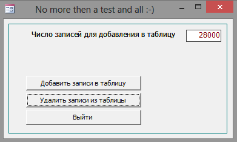

Пример счетчика процента выполнения цикла
Прислал: Александр Коротков norma@mgn.ru
Пример счетчика процента выполнения цикла ...
(Показывает процент выполнения некоего процесса)

MSA-2000 ( 21 kB)
Option Compare Database
Option Explicit
Sub HideLables()
lblPercent.Visible = False
lblNumber.Visible = False
lblDone.Visible = False
End Sub
Sub ShowLables()
lblPercent.Visible = True
lblNumber.Visible = True
lblDone.Visible = True
End Sub
'**********************************************************************************************************************
' добавляем записи в таблицу
'
Private Sub cmdAdd_Click()
On Error GoTo Err_Fuck
Dim rstAdd As Recordset
Dim dblStep As Double
Dim dblDone As Double
Dim intCounter As Integer
If IsNull(txtLoopNumber) Or txtLoopNumber > 30000 Then
MsgBox "Число циклов должно быть в диапазоне 0 ... 30000!", vbInformation + vbOKOnly, "Think!"
txtLoopNumber = 0
Exit Sub
Else
dblStep = 100 / txtLoopNumber ' шаг приращения
dblDone = 0 ' процент выполнения
Set rstAdd = CurrentDb.OpenRecordset("tblTest", dbOpenDynaset)
Call ShowLables
For intCounter = 1 To txtLoopNumber
With rstAdd
.AddNew
![MyField] = "Какого черта!" ' все три действия - не более
![MyDate] = Now() ' чем для увеличения времени
![MyNumber] = dblDone ' работы цикла
.Update
dblDone = dblDone + dblStep ' вычисляем следующее приращение
lblNumber.Caption = CInt(dblDone) ' показываем процент выполнения
DoCmd.RepaintObject ' перерисовываем форму
End With
Next intCounter
rstAdd.Close
Call HideLables ' прячем метки
MsgBox "Добавлено " & txtLoopNumber & " записей", vbInformation + vbOKOnly, "Добавление записей"
End If
Exit Sub
Err_Fuck:
Resume Next
End Sub
'**********************************************************************************************************************
' удаляем все записи из таблицы
'
Private Sub cmdDel_Click()
On Error GoTo Err_Hell
Dim rstDel As Recordset
Dim dblStep As Double
Dim dblDone As Double
Dim dblCounter As Integer
Set rstDel = CurrentDb.OpenRecordset("tblTest", dbOpenDynaset)
rstDel.MoveLast
dblCounter = rstDel.RecordCount
dblStep = 100 / dblCounter
dblDone = 0
rstDel.MoveFirst
Call ShowLables
Do Until rstDel.EOF
rstDel.Delete
dblDone = dblDone + dblStep
lblNumber.Caption = CInt(dblDone)
DoCmd.RepaintObject
rstDel.MoveNext
Loop
Call HideLables
MsgBox "Удалено " & dblCounter & " записей", vbInformation + vbOKOnly, "Удаление записей"
Exit Sub
Err_Hell:
Resume Next
End Sub
Private Sub cmdQuit_Click()
DoCmd.Quit
End Sub
Private Sub Form_Open(Cancel As Integer)
Call HideLables
End Sub